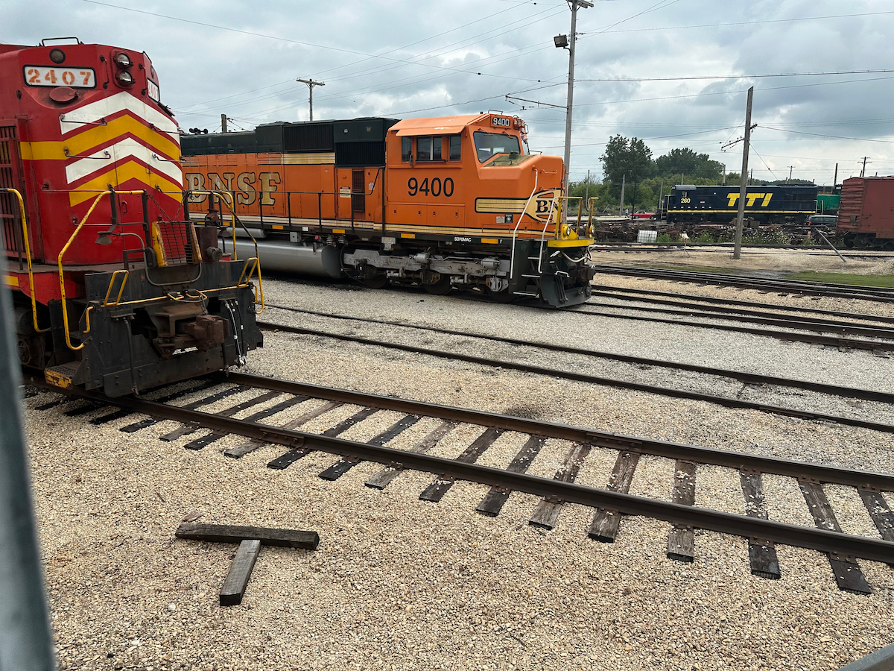
At Barn 2
Green Bay & Western RSD15 2407 and BNSF SD70MAC 9400 at Barn 2 of the Illinois Railway Museum, with a TTI GE visible in the background.
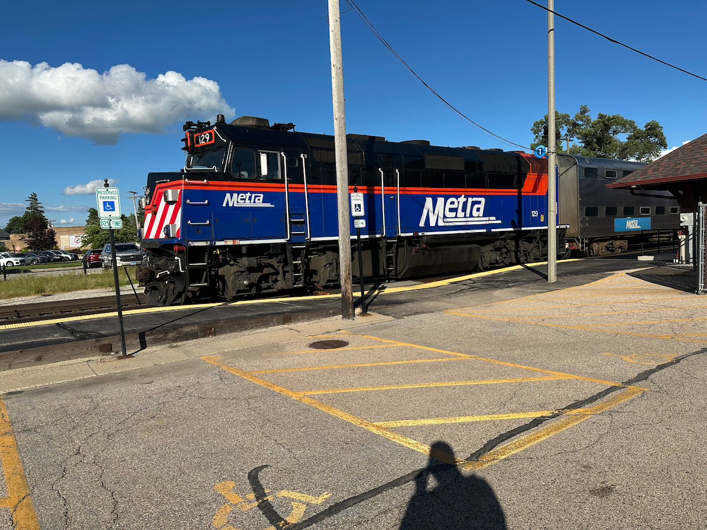
Metra 129 at Woodstock
Metra F40PH 129 at the Woodstock station.
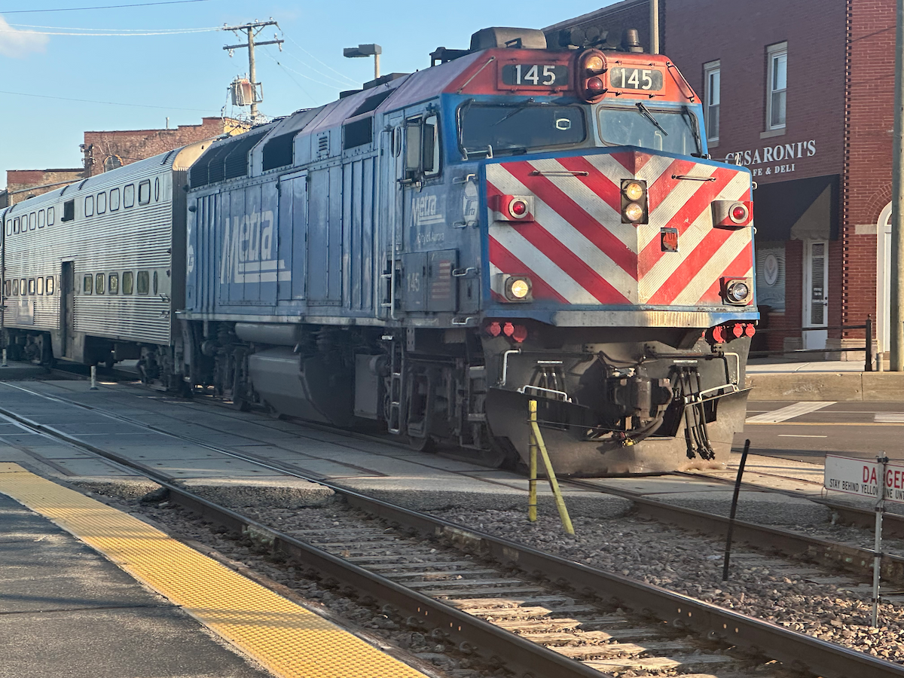
Metra F40PH 145 “City of Aurora”
Metra F40PH 145 “City of Aurora” at Woodstock, Illinois. The locomotive is blue with an orange roof and red and white nose stripes.
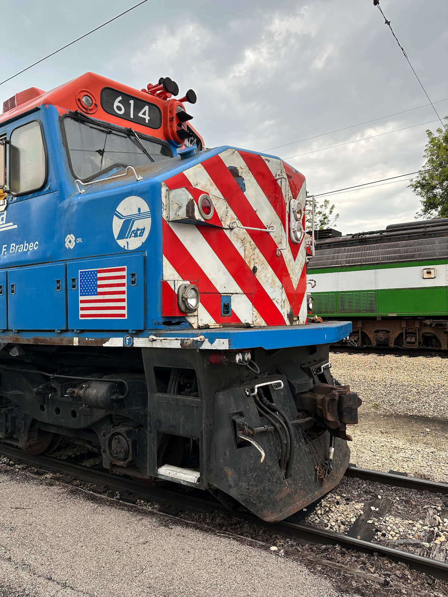
Metra F40C 614 “Edward F. Brabec”
The nose of Metra F40C 614 “Edward F. Brabec” at the Illinois Railway Museum.
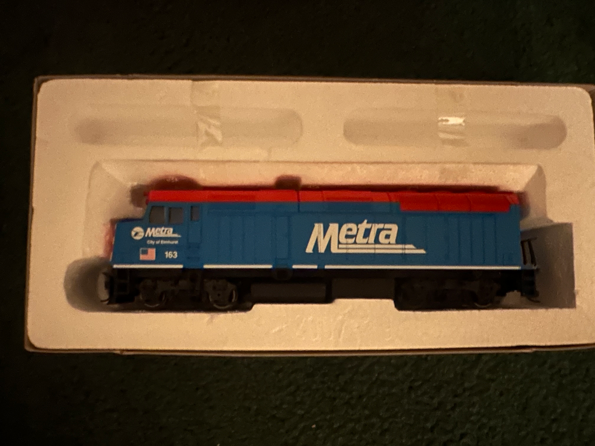
Metra F40PH Model
A Walthers Trainline model of Metra F40PH 163, City of Elmhurst.
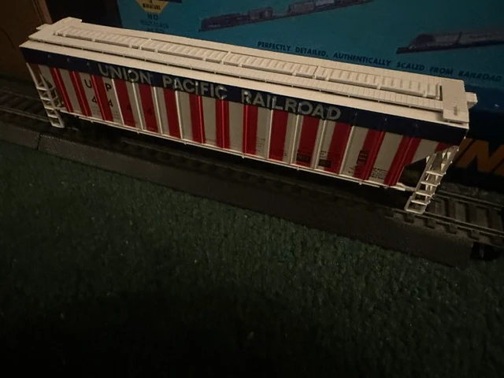
Union Pacific Bicentennial Hopper
An Athearn HO scale model of Union Pacific Railroad bicentennial covered hopper number 4444.
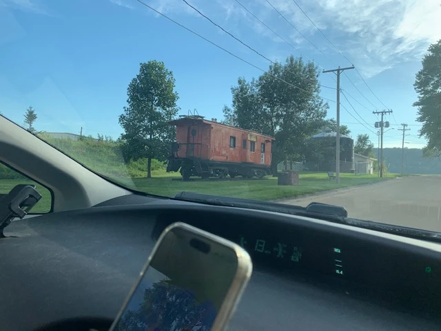
Milwaukee Caboose at Sabula
A distant view through a car windshield of the Milwaukee Road bay-window caboose at Sabula, Iowa.
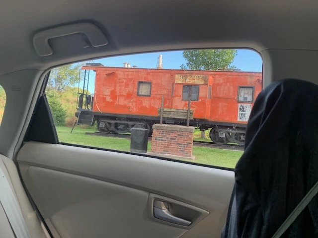
Milwaukee Caboose at Sabula
A close view through a car window of the Milwaukee Road bay-window caboose at Sabula, Iowa.
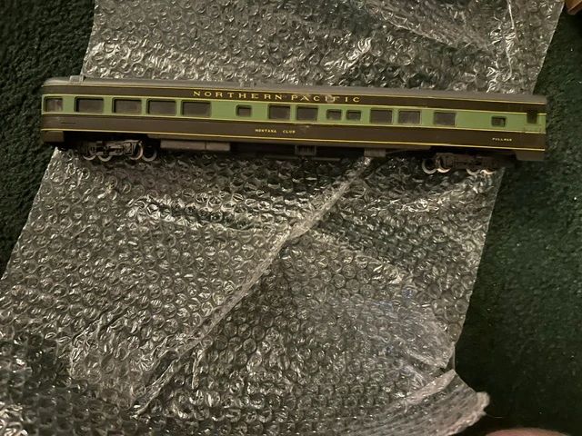
Northern Pacific Montana Club
An HO scale model of the Northern Pacific Pullman Observation Car, the Montana Club.
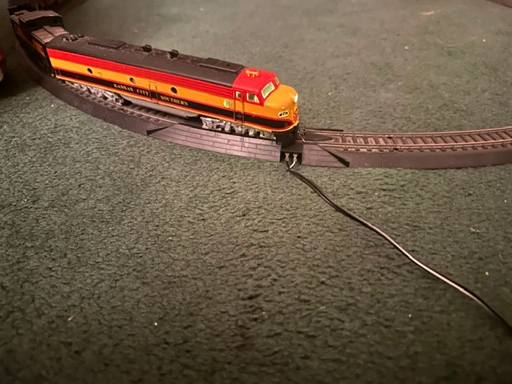
Kansas City Southern E8 or E9
An HO scale model of a Kansas City Southern E8 or E9.
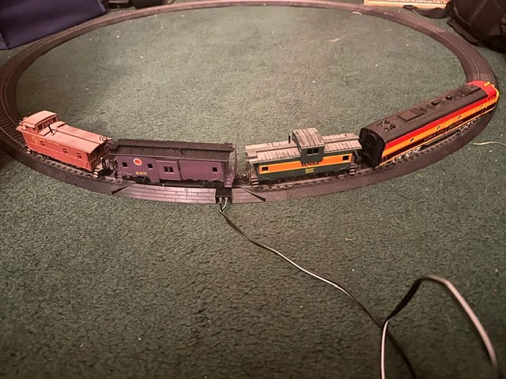
Kansas City Southern Caboose Train
An HO scale caboose train pulled by a Kansas City Southern E8 or E9.
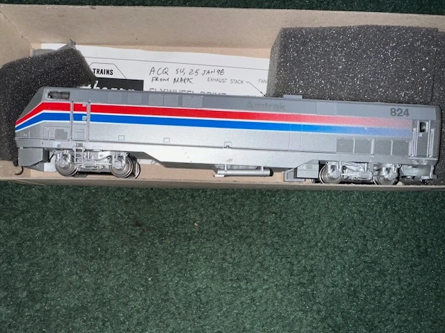
Amtrak P40DC 824
An HO scale model of Amtrak P40DC number 824 in Phase III livery, with red, white, and blue stripes that fade near the rear.
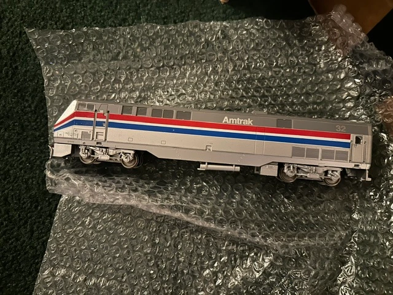
Amtrak P42DC 32
A model by Athearn of Amtrak P42DC number 32 in Phase III paint.